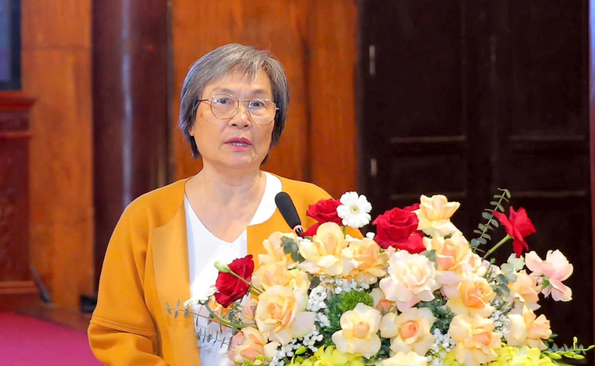
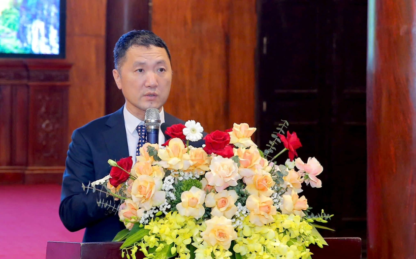

Lượng hóa giá trị kinh tế Quần thể danh thắng Tràng An
Lượng hóa giá trị kinh tế Quần thể danh thắng Tràng An sẽ góp phần nhận diện đầy đủ đóng góp của di sản, bao gồm giá trị kinh tế ở thời điểm hiện tại cũng như triển vọng trong tương lai. Ngày 28/10, tại Ninh Bình, Văn phòng UNESCO tại Hà Nội, Trường Khoa học liên ngành và Nghệ thuật, Sở Du lịch Ninh Bình tổ chức hội nghị công bố Đề án nghiên cứu về Lượng giá giá trị kinh tế Quần thể danh thắng Tràng An.g,
Theo PGS.TS Nguyễn Hồng Thục (Chủ nhiệm đề án), việc nghiên cứu "Lượng giá giá trị kinh tế Quần thể danh thắng Tràng An" sẽ góp phần quan trọng trong việc xây dựng chiến lược phát triển Đô thị di sản thiên niên kỷ, bao gồm thành phố di sản và thành phố sáng tạo mà tỉnh Ninh Bình đang xây dựng. Bà Thục nhấn mạnh, Quần thể danh thắng Tràng An được UNESCO công nhận là Di sản Văn hóa và Thiên nhiên thế giới năm 2014, di sản này khẳng định được bản sắc quốc gia, lòng tự hào dân tộc, thúc đẩy chủ quyền quốc gia. Từ những giá trị nổi bật, để phát huy theo bà Thục, cần kết nối các cộng đồng xã hội và xây dựng niềm tin chung, bằng việc thúc đẩy du lịch di sản, truyền tải và củng cố bản sắc dân tộc. "Đề án xây dựng thông qua 4 nhánh nghiên cứu: Di sản tự nhiên; di sản văn hóa; di sản định cư; kinh tế du lịch và các giá trị phức hợp nổi bật của nhân loại và Đông Nam Á", bà Thục chia sẻ.  Lượng hóa giá trị kinh tế di sản thế giới Tràng An - 2 Ông Bùi Văn Mạnh, Giám đốc Sở Du lịch Ninh Bình mong muốn kết quả nghiên cứu của đề án sẽ sớm được công bố (Ảnh: Thái Bá). Chủ nhiệm đề án chia sẻ thêm, đề án sẽ trả lời câu hỏi khoa học về giá trị kinh tế di sản, giá trị kinh tế do cơ hội mà di sản mang lại là bao nhiêu, trong bảo tồn, khai thác và phát huy giá trị di sản. Những giá trị này cần được định lượng thông qua các phương pháp lượng giá khoa học tổng thể di sản. Bởi định lượng giá trị để lan tỏa giá trị thương hiệu Tràng An - Hoa Lư mà du khách sẵn sàng chi trả để tham quan và quảng bá cho di sản vô giá này ra quốc gia và quốc tế. Đề án Lượng giá giá trị kinh tế Quần thể danh thắng Tràng An được tiến hành bởi các chuyên gia Việt Nam (tại Đại học Quốc gia Hà Nội), đồng hành với các chuyên gia quốc tế (UNESCO, Santagata Foundation, IOER Leitbild) để đảm bảo tính khoa học và chính xác tầm quốc tế. Các kết quả lượng giá đề án được công bố quốc tế về mặt khoa học và truyền thông quốc tế, những giá trị hiện tại và giá trị cơ hội trong tương lai của Di sản thế giới phức hợp quan trọng này. Lượng hóa giá trị kinh tế di sản thế giới Tràng An - 3 Đoàn đại biểu Văn phòng UNESCO tại Hà Nội tham quan di sản Tràng An (Ảnh: Thái Bá). "Đề án sẽ phục vụ quan trọng cho việc thực thi Quy hoạch tỉnh Ninh Bình đã được Thủ tướng Chính phủ phê duyệt tháng 3/2024, là phát triển thành phố Hoa Lư từ cội nguồn của di sản Quần thể danh thắng Tràng An, theo tính chất Đô thị di sản thiên niên kỷ và thành phố sáng tạo - là thành phố trực thuộc Trung ương vào năm 2035", bà Thục nói. Ông Bùi Văn Mạnh, Giám đốc Sở Du lịch Ninh Bình khẳng định, việc lượng giá giá trị kinh tế của một di sản không chỉ dừng lại ở các con số và cũng không chỉ đơn thuần là một công cụ để đánh giá giá trị kinh tế. Quan trọng hơn cả, đề án sẽ làm sáng tỏ nhận thức đúng đắn về giá trị, tầm quan trọng của di sản thế giới trong phát triển kinh tế - xã hội và bảo tồn văn hóa của cộng đồng địa phương và của tỉnh. "Đề án sẽ là cơ sở để xây dựng các chính sách, chiến lược nhằm khai thác tiềm năng, thế mạnh của Quần thể danh thắng Tràng An một cách hiệu quả, bền vững và hài hòa mà vẫn bảo tồn được giá trị lịch sử, văn hóa và thiên nhiên độc đáo của Di sản thế giới Quần thể danh thắng Tràng An", ông Mạnh nói. Giám đốc Sở Du lịch Ninh Bình đề nghị Văn phòng UNESCO Hà Nội, Trung tâm Di sản thế giới, các cơ quan tư vấn của UNESCO và chuyên gia quốc tế phối hợp chặt chẽ với Sở Du lịch và Trường Khoa học liên ngành và Nghệ thuật (Đại học Quốc gia Hà Nội) triển khai thực hiện và công bố kết quả đề án, tiến tới xây dựng một Tuyên bố Tràng An hoặc cao hơn là Hiến chương về Di sản Thế giới. Bài viết hay? Ấn để tương tác